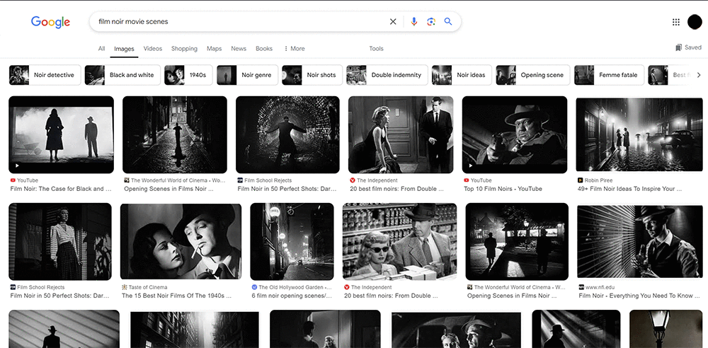
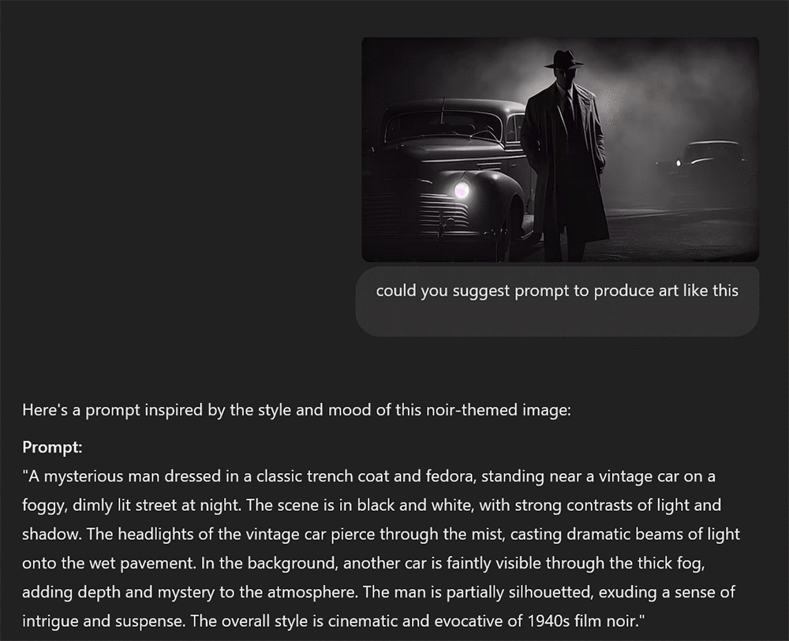
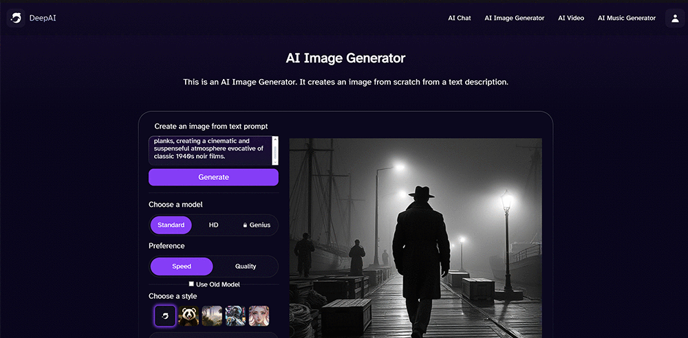
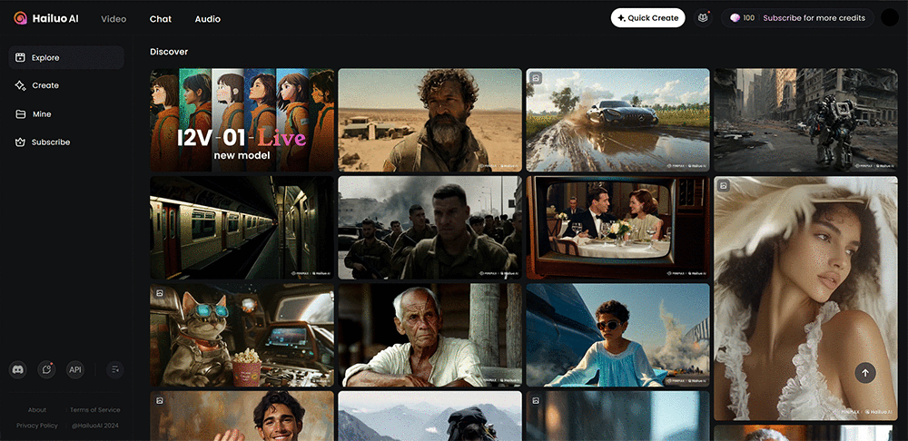
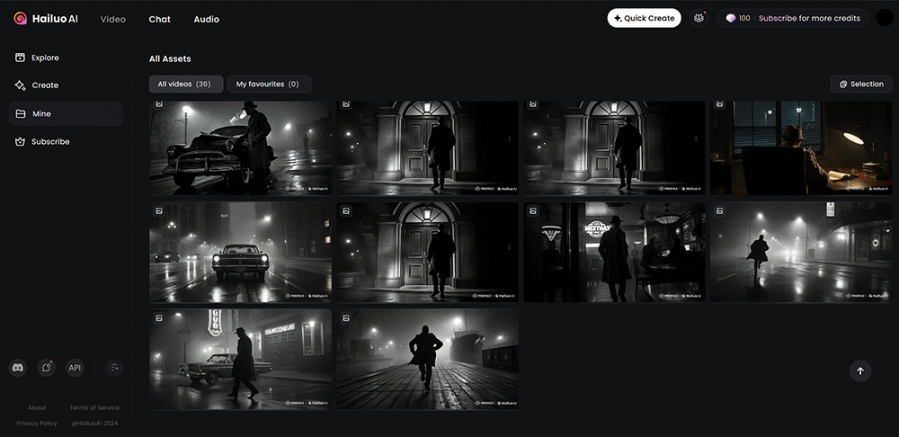

In the year of our lord 2024, what is everyone talking about if not AI-generated content and the future of the art and creative industries once dominated by human creativity and artistry? This is all I have been seeing for months on end, but I never felt it was good enough to be worth my pursuit, as the quality always appeared to lack precision, or to be anything remotely tolerable, to say the least, until very recently. It seems that in the past six months there has been more involvement and attention from bigger companies as well as startups attempting to make real-time video generation AI, real-time game AI and so on, so to me it's a turn in the right direction: a step into the next phase of the AI conquest, where it will soon dominate the creative industry as well.
So I decided to try it out for the first time, and here are the steps.
- Generate an image prompt using an LLM (large language model) such as ChatGPT, Nemotron or Claude.
- Use the prompt with an image-generation diffusion model from any of the services out there, such as OpenArt, DeepAI, Adobe Firefly, Midjourney or Stable Diffusion.
- Finally, take the image and pass it to a video-generation AI such as MiniMax, Runway or Krea as the starting frame, with prompts to guide the video generation.
To start off, I decided to use ChatGPT to generate the prompts for the images and any other text required, and to keep the style and theme consistent across the generated images.
First of all, I went to Google Images to find an image with the style and vibe I was looking for in my "movie": anything that closely resembles your vision. I was looking up film noir movie scenes.

Then I copied one of the images, pasted it into ChatGPT and asked it to give me a prompt I could pass to an image generator to create images in a similar style.

Once I had extracted the style and overall aesthetics of the image using ChatGPT, I looked around for a free AI image generator, as I assumed it would take a lot of generations to get my images right. Luckily, I found the deepai.org image generator, which allowed me to generate an unlimited number of images for free. I used it to make several images for the same prompt, pick the best one, and roughly maintain consistency, at least in terms of noticeable visual elements.

Once I was satisfied with the result, I went to the new, free-to-use Chinese AI video generator Hailuo AI by MiniMax, which produces impressive results, all completely free of charge.

I mostly let the AI decide what to generate on its own and didn't guide it except in a few cases, but I must say MiniMax offers much more control over the look compared to the image-generation stage.

And finally, after making several clips to fill out my somewhat spontaneous storyboard, I downloaded them all and stitched them together using CapCut.

Here is the stitched-up video, uploaded to YouTube with added noir jazz music so it flows like a trailer. I feel it went well for a first test run. There is a lot more to improve, especially in the aspects that determine consistency.
I also made a post on LinkedIn... you know what to do: feel free to like and share, and mention me in the creations you make following this method!
© 2026 Alwin Joshy